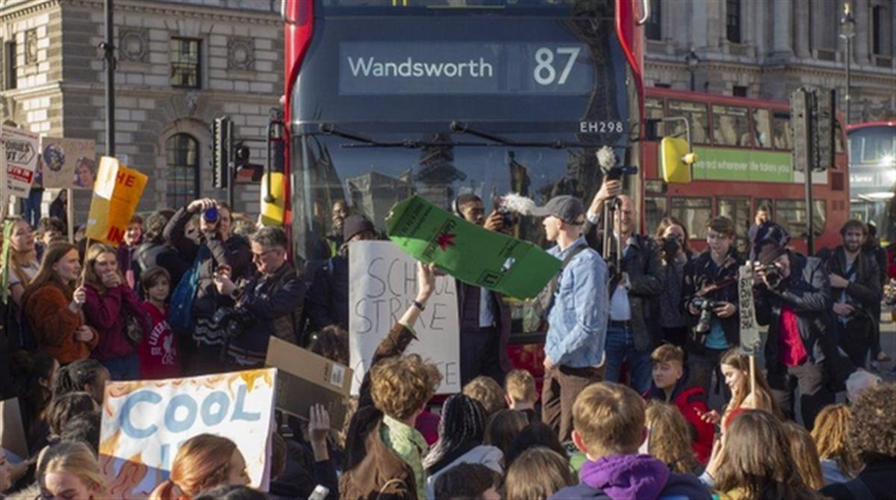

Don't call young people 'woke', says leading head teacher
By Hannah Richardson
BBC News education reporter
Adults should stop mocking young people by calling them 'woke' for standing up for things they believe in, a leading head teacher has said.
Samantha Price, president of the Girls' Schools Association, urged parents and teachers to keep up with the younger generation instead.
She told a conference on Monday that pupils are genuinely worried about racism, sexism and climate change.
They want to address these issues with support from adults, she added.
Woke is an informal term from the US, meaning alert to injustice and discrimination in society, particularly racism and sexism. But it is often used in a derogatory way to criticise someone for a certain set of views.
Ms Price, headmistress of the prestigious independent Benenden School in Kent, told her organisation's annual conference: 'Adults comment that they feel today's teenagers are speaking a different language; that they can't say anything without being corrected or 'called out' by these PC children.'
'Times have changed'
She said she is 'weary of hearing the older generation say, 'you can't say anything any more'.'
And she added: 'The fact is that times have changed, and we simply need to keep up with them.'
The last few years have seen numerous protests by young people about social issues, such as the treatment of women, racism through the Black Lives Matter movement, and demands for action on climate change.
Schools are hosts to young people as they develop and become aware of the issues that concern them.
Large numbers of young people have taken part in the Fridays for Future and School Strike climate change protests, sometimes with the support of their schools and teachers, over the last few years.

Ms Price added: 'This so-called 'woke' generation are actually simply young people who care about things: about causes, about the planet, about people. It ultimately comes down to something very simple: being kind.
'Isn't that what we all want our toddlers to be? We teach them to be kind.
'And then when they grow up to be impressive, kind young people with an understanding and appreciation for the world around them, how can it be right that we mock them, or dismiss them as unrealistic do-gooders?'
She cautioned against the older generation dismissing the 'energetic changes of this generation' in 'derogatory tones and sighs'.
Former US President Barack Obama is one of the highest-profile figures to call out self-righteous attitudes among 'woke' young people.
In a TV interview in 2019, he said to try to bring about change by being 'as judgemental as possible in 2019' against others with different views would not achieve much.
SOURCE: BBC